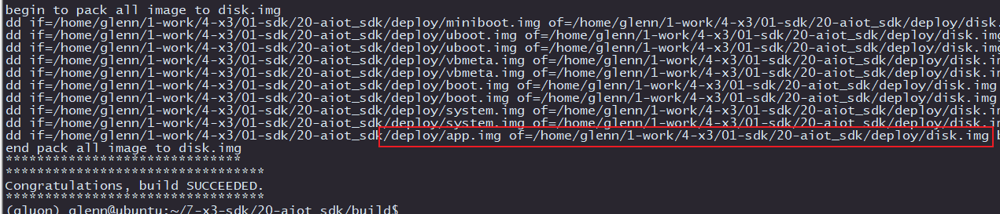
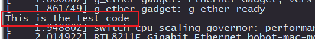

4.3.24. 添加自定义内容进系统镜像
在开发过程中经常需要把一些配置文件或者开发的程序打包进系统镜像。本章节介绍两个两种方式来添加文件进系统镜像：
添加文件进根文件系统所在的
system分区新增新分区，把自定义文件存放到新分区中，生成对应的新分区镜像
4.3.24.1. 添加文件进system分区
添加用户自定义文件进根文件系统的方式比较简单，只需要把准备好的文件复制到system/rootfs_yocto/hijack目录下，然后修改该目录下的do_hijack.sh脚本，把新增的文件添加进根文件系统。
例如添加可以修改 usr/bin/defaultip.sh 默认的以太网IP配置文件。具体操作可以参考do_hijack.sh的做法。
注意事项：
当前system分区分配的大小是150MB，剩余给用户使用的空间只有10MB左右，如果添加文件后，总大小超过的150MB的分区大小，会导致生成system分区镜像失败。可以通过扩大system分区大小解决，请参考 分区表配置 修改分区表。
4.3.24.2. 新增新分区方式
本方法适用于要专门设置一个分区来管理程序的场景，比如应用程序专门放到一个分区内，便于管理。
以下步骤说明，全部以配置新增app分区为例进行说明。
内容准备
准备一个目录app用来存放新分区内的文件，并且在里面添加一个 app_start.sh的脚本程序，等会完成配置后，需要让app_start.sh在开机时自启动。
# 在源码根目录下执行以下命令
mkdir app
cd app
echo "#!/bin/sh" > app_start.sh
echo 'echo "This is the test code"' >> app_start.sh
chmod 777 app_start.sh
生成分区镜像
在build目录下添加脚本来生成app分区镜像。
使用
make_ext4fs工具生成ext4格式的分区镜像使用
mksquashfs工具生成squashfs格式的分区镜像生成的镜像会在板级配置文件中指定的输出目录下，名为
app.img
#!/bin/bash
set -e
export HR_TOP_DIR=$(realpath $(cd $(dirname $0); pwd)/../)
export HR_LOCAL_DIR=$(realpath $(cd $(dirname $0); pwd))
# check board config
check_board_config ${@:1}
# 编译出来的镜像保存位置
export IMAGE_DEPLOY_DIR=${HR_IMAGE_DEPLOY_DIR}
[ ! -z ${IMAGE_DEPLOY_DIR} ] && [ ! -d $IMAGE_DEPLOY_DIR ] && mkdir $IMAGE_DEPLOY_DIR
rm -f ${IMAGE_OUT_DIR}/app.img
# 指定app分区的源文件目录
APP_DIR=${HR_TOP_DIR}/app
# 对于emmc的存储介质，支持 "ext4" 和 "squashfs" 两种文件系统格式
# 生成 "ext4" 格式的分区镜像
# 参数说明： -l 指定分区大小， -L 指定分区的label， 生成的镜像名， 源文件目录
make_ext4fs -l 268435456 -L app ${IMAGE_DEPLOY_DIR}/app.img ${APP_DIR}
# 生成 "squashfs" 格式的分区镜像，并且可以设置不通的压缩算法：lx4, xz等
# 当需要使用 squashfs 文件系统是，根据自身具体的需求取消以下命令的注释
# mksquashfs ${APP_DIR} ${IMAGE_DEPLOY_DIR}/app.img -b 64K -comp lz4 -noappend -all-root
# mksquashfs ${APP_DIR} ${IMAGE_DEPLOY_DIR}/app.img -b 256K -comp xz -noappend -all-root
集成编译脚本
把编译脚本添加进 xbuild.sh中，方便调用执行。
添加编译选项
app到avail_func中。
avail_func=("miniboot" "uboot" "boot" "hbre" "debs" "system" "pack" "factory" "lunch" "app")
添加
build_app对应app的编译。
function build_app
{
if [ "$1" = "all" ]; then
echo "******************************"
echo "begin to build app"
bash mk_app.sh || exit 1
echo "end build app"
echo "******************************"
fi
}
整体编译时编译app分区
if [ -d ${HR_TOP_DIR}/app ];then
build_app
fi
完成以上配置后，现在就可以执行以下命令编译生成app.img镜像：
cd build
./xbuild.sh app
begin to build app
Creating filesystem with parameters:
Size: 268435456
Block size: 4096
Blocks per group: 32768
Inodes per group: 6400
Inode size: 256
Journal blocks: 1024
Label: app
Blocks: 25600
Block groups: 1
Reserved block group size: 7
Created filesystem with 12/6400 inodes and 1439/25600 blocks
end build app
******************************
*********************************
Congratulations, build SUCCEEDED.
*********************************
生成的镜像为 deploy/app.img，大小256MB。如果是 ext4格式，可以选择通过执行 resize2fs app.img命令缩小固件大小，同时在旭日X3M设备上需要执行以下命令恢复为分区大小。
resize2fs `findmnt -n -o SOURCE /app | sed 's~\[.*\]~~'`
修改分区表
添加新分区进分区表，以 device/horizon/x3/emmc_yocto_abboot_gpt.conf为例说明：
1:app/app.img:ext4:870912s:1395199s:1
在分区表中显示app分区
设置
app分区使用app.img作为镜像名，ext4格式，大小256MB（s代表block，每个block 512字节）最后的1表示打包进
disk.img中
具体分区表的配置请参考 分区表配置 修改分区表。
完成以上分区配置后，对sdk执行全量编译即可把app打包进disk.img中。
自动挂载新分区
添加新分区后，需要配置system/rootfs_yocto/root/etc/fstab，让新分区能在系统启动时自动完成挂载。
LABEL=app /app auto defaults 0 1
注：/app 目录需要在制作跟文件系统时创建后，否则会挂载失败。
自启动app_start.sh
修改system/rootfs_yocto/root/init.rc，添加以下内容，设置开机自启动/app/app_start.sh。
service app_start /app/app_start.sh
class loadko_ready
oneshot
console
自启动的配置说明，请查阅 自定义启动项。
编译打包
xbuild.sh 中调用编译脚本和打包镜像，并合并进系统镜像
cd build
./xbuild
可以看到最后的编译部分已经把app.img添加进disk.img了。

刷机验证
启动时如果通过串口连接设备，那么可以在串口的打印日志上看到
This is the test code，说明app_start.sh已经运行。

fdisk -l命令可以看到app分区，大小256MB
root@x3sdbx3-samsung2G-3200:~# fdisk -l
Found valid GPT with protective MBR; using GPT
Disk /dev/mmcblk0: 30597120 sectors, 2652M
Logical sector size: 512
Disk identifier (GUID): b8be2e38-f515-6244-b2ec-9ec24e7280e0
Partition table holds up to 128 entries
First usable sector is 34, last usable sector is 30597086
Number Start (sector) End (sector) Size Name
1 34 39 3072 veeprom
2 40 2047 1004K miniboot
3 2048 6143 2048K uboot
4 6144 10239 2048K uboot_b
5 10240 10495 128K vbmeta
6 10496 10751 128K vbmeta_b
7 10752 31231 10.0M boot
8 31232 51711 10.0M boot_b
9 51712 358911 150M system
10 358912 666111 150M system_b
11 666112 870911 100M bpu
12 870912 1395199 256M app
13 1395200 30597086 13.9G userdata
mount命令可以看到app分区已经自动挂载
root@x3sdbx3-samsung2G-3200:~# mount
/dev/root on / type ext4 (ro,relatime,data=ordered)
....
/dev/mmcblk0p12 on /app type ext4 (rw,relatime,data=ordered)
/dev/mmcblk0p13 on /userdata type ext4 (rw,relatime,data=ordered)
...
ls /app命令可以看到存在app_start.sh文件
root@x3sdbx3-samsung2G-3200:~# ls /app/
app_start.sh lost+found